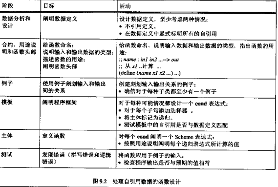

Contents
表
结构体 是表达复合信息的一种方法。
如果我们事先不确定有多少个数据放在一起，该用什么？
这时候可以用 表 。
表 可以表示任意且有限数目的数据。
empty 在Scheme表示为一个空表。
cons 可以从一个表构造出一个更长的表。
表并非一定由同种类型的数据组成，它可以包括任何类型的数据。
first 提取表中的第一个字段，Scheme规范好像是 car
rest 提取表中的第二个字段，Scheme规范好像是 cdr
习题9.1.3
1 2 3 4 5 6 7 8 9 10 11 12 13 14 15 16 17 18 19 20 21 22 23 24 25 26 27 28 29 30 31 32 | ;; add-up-3: list-of-3-numbers -> number
;; 求表a-list-of-3-numbers中3个数之和
(define (add-up-3 a-list-of-3-numbers)
(+ (first a-list-of-3-numbers)
(first (rest a-list-of-3-numbers))
(first (rest (rest a-list-of-3-numbers)))))
;; 递归形式和尾递归形式，题目未做要求，
;; 一时兴起写的
;; 递归形式
(define (add-up-3 a-list-of-3-numbers)
(cond
[(null? a-list-of-3-numbers) 0]
[else (+ (fist a-list-of-3-numbers)
(add-up-3 (rest a-list-of-3-numbers)))]))
;; 尾递归形式
(define (add-up-3 a-list-of-3-numbers start)
(cond
[(null? a-list-of-3-numbers) start]
[else (add-up-3 (rest a-list-of-3-numbers)
(+ (fist a-list-of-3-numbers) start))]))
;; distance-to-0-for-3: list-of-3-numbers -> number
;; 三维空间中某个点到原点的距离
(define (distance-to-0-for-3 list-of-3-numbers)
(sqrt (+ (sqr (first list-of-3-numbers))
(sqr (first (rest list-of-3-numbers)))
(sqr (first (rest (rest list-of-3-numbers)))))))
;; 测试
(distance-to-0-for-3 '(2 3 4))
|
习题9.1.4
1 2 3 4 5 6 7 8 9 10 11 12 13 14 15 16 17 | ;; contains-2-doll?: a-list-of-2-symbols -> boolean
;; 判断一个包含两个符号的表中是否有'doll
;; 模板
(define (contains-2-doll? a-list-of-2-symbols)
... (first a-list-of-2-symbols)...
... (first (rest a-list-of-2-symbols)...))
(define DOLL 'doll)
(define (contains-2-doll? a-list-of-2-symbols)
(or (symbol=? (first a-list-of-2-symbols))
(symbol=? (first (rest a-list-of-2-symbols)))))
;; 测试
(contains-2-doll? '(as doll))
(contains-2-doll? '(as sss))
|
cons和结构体的确切关系
cons其实是一个结构体，first和rest是它的两个选择器。
1 2 3 4 5 6 7 8 9 | (define-struct pair (left right))
(define (out-cons a-value a-list)
(make-pair (a-value a-list)))
(define (out-first a-pair)
(pair-left a-pair))
(define (our-rest a-pair)
(pair-right a-pair))
(define (out-cons? x)
(pair? x))
|
不过cons还有一个要求，right字段要确保是一个表。 即，要么是cons结构，要么是一个空表。
1 2 3 4 5 | (define (our-cons a-value a-list)
(cond
[(empty? a-list) (make-pair (a-value a-list))]
[(our-cons? a-list) (make-pair (a-value a-list))]
[else (error 'cons "list as second argument expected")]))
|
处理任意长的表
习题9.3.1
1 2 3 4 5 6 7 8 9 10 11 12 13 | ;; contains-doll?: list-of-symbols -> boolean
;; 判断符号'doll是否在a-list-of-symbols中
(define (contains-doll? a-list-of-symbols)
(cond
[(empty? a-list-of-symbols) false]
[(symbol=? (first a-list-of-symbols) 'doll) true]
[else (contains-doll? (rest a-list-of-symbols))]))
;;测试
(contains-doll? empty)
(contains-doll? (cons 'ball empty))
(contains-doll? (cons 'arrow (cons 'doll empty)))
(contains-doll? (cons 'bow (cons 'arrow (cons 'ball empty))))
|
习题9.3.2
1 2 3 4 5 6 7 | ;; contains-doll?: list-of-symbols -> boolean
;; 判断符号'doll是否在a-list-of-symbols中
(define (contains-doll? a-list-of-symbols)
(cond
[(empty? a-list-of-symbols) false]
[else (or (symbol=? (first a-list-of-symbols) 'doll)
(contains-doll? (rest a-list-of-symbols)))]))
|
习题9.3.3
1 2 3 4 5 6 7 | ;; contains?: list-of-symbols symbol -> boolean
;; 判断符号a-symbol是否在a-list-of-symbols中
(define (contains-doll? a-list-of-symbols a-symbol)
(cond
[(empty? a-list-of-symbols) false]
[(symbol=? (first a-list-of-symbols) a-symbol) true]
[else (contains-doll? (rest a-list-of-symbols) a-symbol)]))
|
设计自引用数据定义的函数
更多关于简单表的例子
习题9.5.2
1 2 3 4 5 6 7 8 9 10 11 12 13 14 15 | ;; how-many-symbols: list-of-symbols -> number
;; 返回一个符号表中元素的个数
(define (how-many-symbols a-list-of-symbols)
(cond
[(empty? a-list-of-symbols) 0]
[else (+ 1 (how-many-symbols (rest a-list-of-symbols)))]))
;; how-many-numbers: list-of-numbers -> number
;; 返回一个数值表中元素的个数
(define (how-many-numbers a-list-of-numbers)
(cond
[(empty? a-list-of-numbers) 0]
[else (+ 1 (how-many-numbers (rest a-list-of-numbers)))]))
;; 两者除了参数类型不一样外，函数的具体逻辑是一模一样的
|
习题9.5.3
1 2 3 4 5 6 7 8 9 10 11 12 13 14 15 16 17 18 19 20 21 | ;; dollar-store?: list-of-numbers -> boolean
;; 检查一个物价表中是否所有元素小于1
(define MIN_PRICE 1)
(define (dollar-store? a-list-of-numbers)
(cond
[(empty? a-list-of-numbers) false]
[else (and (< MIN_PRICE (first a-list-of-numbers))
(dollar-store? (rest a-list-of-numbers)))]))
(define (super-dollar-store? a-list-of-numbers min-price)
(cond
[(empty? a-list-of-numbers) false]
[else (and (< min-price (first a-list-of-numbers))
(super-dollar-store? (rest a-list-of-numbers)
min-price))]))
;; 测试
(dollar-store? empty)
(not (dollar-store? (cons .75 (cons 1.95 (cons .25 empty)))))
(dollar-store? (cons .75 (cons .95 (cons .25 empty))))
|
习题9.5.4
1 2 3 4 5 6 7 8 9 10 11 12 13 14 15 16 17 18 19 | (define-struct temp-range (min max))
;; 结构体: (make-temp-range min max)
;; min, max 都为数值
;; in-temp-range: temp-range number -> boolean
;; 检查某一个数值是否在温度区间内
(define (in-temp-range a-temp-range a-temp)
(and (>= a-temp (temp-range-min a-temp-range))
(<= a-temp (temp-range-max a-temp-range))))
;; check-range: list-of-numbers, number -> boolean
;; 检查温度值表中所有元素是否都在温度区间内
(define (check-range a-list-of-numbers a-temp-range)
(cond
[(empty? a-list-of-numbers) true]
[else (and (in-temp-range a-temp-range
(fist a-list-of-numbers))
(check-range (rest a-list-of-numbers)
a-temp-range))]))
|
习题9.5.5
1 2 3 4 5 6 7 8 9 10 11 12 | (define BASE 10)
;; 进制位
;; convert: list-of-numbers -> number
;; 读取一个数值表，然后输出一个数值
;; 数值表的顺序和数值的每位数顺序一致
(define (convert a-list-of-numbers)
(cond
[(empty? a-list-of-numbers) 0]
[else (+ (* (expt BASE (how-many-numbers a-list-of-numbers))
(first a-list-of-numbers))
(convert (rest a-list-of-numbers)))]))
|
习题9.5.6
1 2 3 4 5 6 7 8 9 10 11 12 13 14 15 | ;; sum: list-of-numbers -> number
;; 求一个数值表中所有数值之和
(define (sum a-list-of-numbers)
(cond
[(empty? a-list-of-numbers) 0]
[else (+ (first a-list-of-numbers)
(sum (rest a-list-of-numbers)))]))
;; delta: list-of-numbers list-of-numbers -> number
;; 第一数值表表示月初的库存清单
;; 第二数值表表示月末的库存清单
;; 求两者价格差
(define (delta start-list-of-numbers end-list-of-numbers)
(- (sum end-list-of-numbers)
(sum start-list-of-numbers)))
|
习题9.5.7
1 2 3 4 5 6 7 8 | ;; average-price: list-of-numbers -> number
;; 读入一个价格表并计算其平均价格
(define (average-price a-list-of-numbers)
(cond
[(empty? a-list-of-numbers)
(error 'average-price "non-empty list-of-number expected")]
[else (/ (sum a-list-of-numbers)
(how-many-numbers a-list-of-numbers))]))
|
习题9.5.8
1 2 3 4 5 6 7 8 | ;; draw-circles: posn list-of-numbers -> number
;; 读取一个圆心位置和一系列的圆半径数值表
;; 在画布上画出所有的圆
(define (draw-circles center radiuses)
(cond
[(empty? radiuses) true]
[else (and (draw-circle center (first radiuses))
(draw-circles center (rest radiuses)))]))
|
comments powered by Disqus